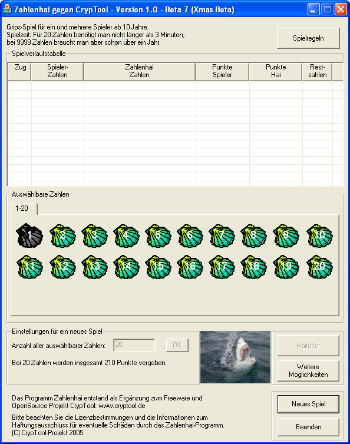
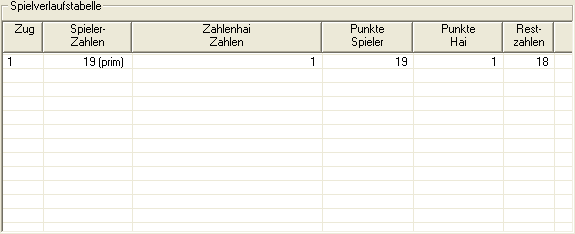
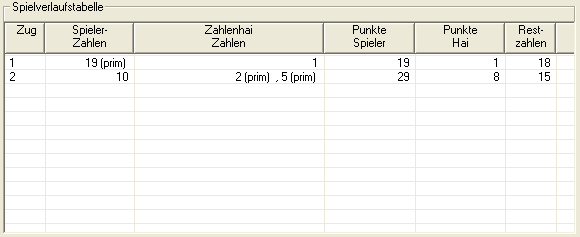
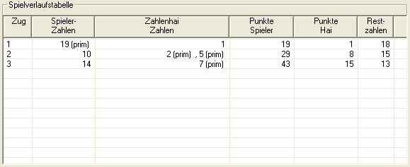
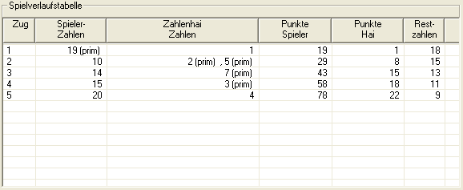
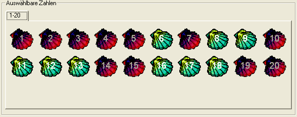
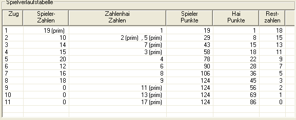
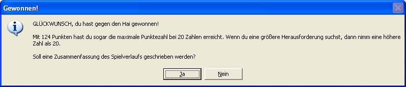
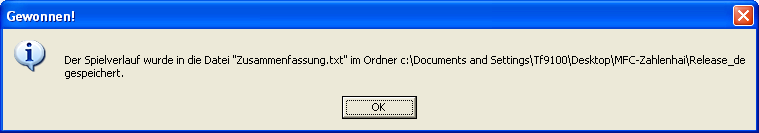
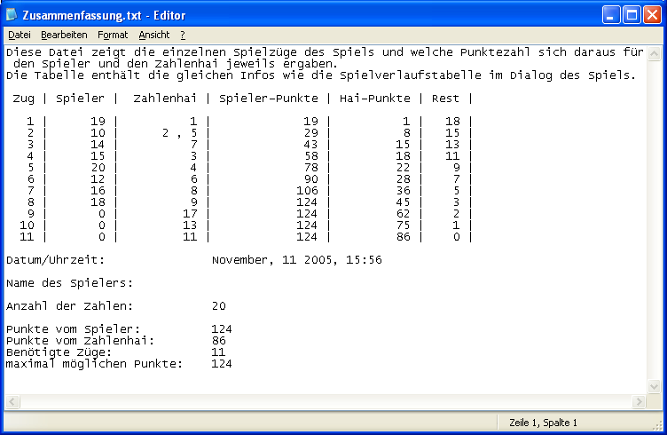

Zahlenhai-Tutorial am Beispiel eines Zahlenvorrats von 20 Zahlen
"Zahlenhai" ist ein Lernspiel, das das Verständnis für Teiler und Primzahlen verbessern soll. Es ist einfach für kleinere Zahlenvorräte (Zahlenmengen). Und es ist eine echte Herausforderung für größere Zahlenmengen.
Die Spielidee des Zahlenhais besteht darin, von den auswählbaren Zahlen im Zahlenvorrat möglichst viele für sich zu gewinnen, so dass deren Summe größer ist als die des Zahlenhais und möglichst maximal.
Wählt der Spieler eine Zahl, bekommt der Zahlenhai alle echten Teiler davon. Dies geht so lange, bis alle Zahlen gewählt oder gefressen sind.
In diesem Tutorial-Teil der Online-Hilfe wird der Spielverlauf anhand eines konkreten Spiels mit 20 Zahlen verdeutlicht.
Zu Beginn erscheinen die Spieloptionen: Darin kannst Du

Beim ersten Start des Spieles ist immer 20 als Anzahl aller zu Beginn auswählbaren Zahlen (Zahlenvorrat) eingetragen. Dies wurde auch als Einstellung für das Tutorial beibehalten.
Da der Zahlenhai alle verfügbaren echten Teiler der gewählten Zahl erhält (bzw. auch die gewählte Zahl selbst, wenn alle ihre echten Teiler nicht mehr verfügbar sind), solltest Du darauf achten, dass der Zahlenhai meist nur eine einzige Zahl bekommt.
Um ein optimales Ergebnis zu erzielen, solltest Du in der ersten Runde die höchste Primzahl auswählen, da diese nur "1" und sich selbst als Teiler hat. In unserem Beispiel wäre die höchste Primzahl im Zahlenvorrat die "19".
Da die "1" Teiler aller Zahlen ist, ist sie immer nach der ersten Runde weg.
Wird eine Zahl von Dir ausgewählt oder vom Zahlenhai gefressen, ist sie nicht mehr verfügbar und wird im Zahlenvorrat rot gefärbt und damit deaktiviert.

Wenn während des Spielverlaufes auswählbare Zahlen übrig bleiben, die dem Spieler keine Punkte mehr einbringen können (das passiert, wenn die Zahlen keine freien, echten Teiler mehr haben und auch nicht selbst Teiler einer anderen, noch freien Zahl sind) wird der Button "Haifutter" aktiv. Dieser gibt dem Spieler die Möglichkeit, sofort all diese Zahlen aus dem Spiel herauszunehmen (und dem Hai zum Fressen vorzuwerfen). Es empfiehlt sich, wann immer der Button "Haifutter" erscheint, diesen zu drücken. Man gewinnt dadurch Übersicht, welche auswählbaren Zahlen man noch drücken kann, um sie auch für sich zu gewinnen.
TODO: Bild der Spielverlaufstabelle nachdem der Button "Haifutter gedrückt wurde. Dadurch muss sich der Text "Das Ende des Spiels..." ändern.
Nach dem ersten Zug wird die Entscheidung komplizierter. Du solltest versuchen, die Zahlen so zu wählen, dass der Zahlenhai immer nur einen Teiler bekommt. Manchmal geht dies aber nicht, da die "2" ebenfalls ein Teiler vieler Zahlen ist. Also solltest Du zumindest versuchen, dem Zahlenhai so wenig wie möglich Teiler zu geben. Dabei musst Du aber auch beachten, dass Du nicht zu kleine Zahlen wählst, die zwar vielleicht nur einen Teiler haben, aber wiederum selbst Teiler einer größeren Zahl sein können. Für den zweiten Zug empfiehlt es sich daher, die Zahl "10" (=2*5) oder "14" (=2*7) zu wählen. In unserem Beispiel haben wir die "10" gewählt.

Da beim vorhergehenden Zug die "10" gewählt wurde, hat jetzt die "14" nur noch die "7" als Teiler und bietet sich daher als nächste Wahl an.

In den nächsten zwei Zügen kann man die "15" und die "20" wählen, da beide auch nur noch einen freien Teiler (3 bzw. 4) haben.

Jetzt sind nur noch drei Zahlen übrig, die noch Teiler haben: die "12", "16" und "18".

Es empfiehlt sich, die "12" vor der "18" zu wählen, da beide die "6" als freien Teiler haben, die "12" aber nur noch die "6", dagegen hat die "18" zusätzlich aber noch die "9". Würde man also zuerst die "18" wählen, kann man im späteren Spielverlauf die "12" nicht mehr nehmen und verschenkt somit Punkte an den Zahlenhai.
Ob Du nun die "12" vor der "16" wählst oder anders herum, spielt keine Rolle.
Als letzte Zahl ist jetzt nur noch die "18" übrig.
Wenn Du den Button "Haifutter" schon nach der ersten Zahl gedrückt hast, dann ist das Spiel jetzt schon zu Ende. Falls Du das nicht getan hast sind jetzt noch die Zahlen "11", "13" und "17" übrig. Jetzt hast Du die Wahl ob du jede der restlichen Muscheln einzeln anklicken möchstest, oder ob Du jetzt den "Haifutter" Button drückst. Punkte kannst du für diese drei Zahlen nicht mehr erhalten.

Jetzt sind alle Zahlen verteilt und das Spiel ist zu Ende.

Das Programm schreibt nach Spielende immer eine Zusammenfassung des Spiels in eine Datei. Die Datei wird in dem Ordner abgespeichert, in dem sich auch die Datei "Zahlenhai.exe"(TODO: momentan noch MFC-Zahlenhai.exe) befindet. Schreibt man bei einem neuen Spiel eine neue Zusammenfassung mit den selben Daten, wird eine alte mit gleichem Namen überschrieben. Die Datei erhält ihren Namen nach folgendem Muster: [gewählter Zahlenvorrat]_[erreichte Punktzahl]_[Name des Spielers]_Zusammenfassung.txt

Die Zusammenfassung enthält:

Im Spieldialog kannst Du jederzeit ein neues Spiel starten.
Dabei wird der Inhalt der Spielverlaufstabelle gelöscht und alle Zahlen werden als wählbar angezeigt. Die Anzahl der zu verteilenden Zahlen ändert sich nur, wenn Du im Feld "Anzahl aller Zahlen" eine andere Zahl einträgst und den Button "OK" oder die Enter-Taste drückst.
Aus rechtlichen Gründen müssen wir explizit auf die Lizenzbestimmungen / Haftungsausschluss hinweisen.